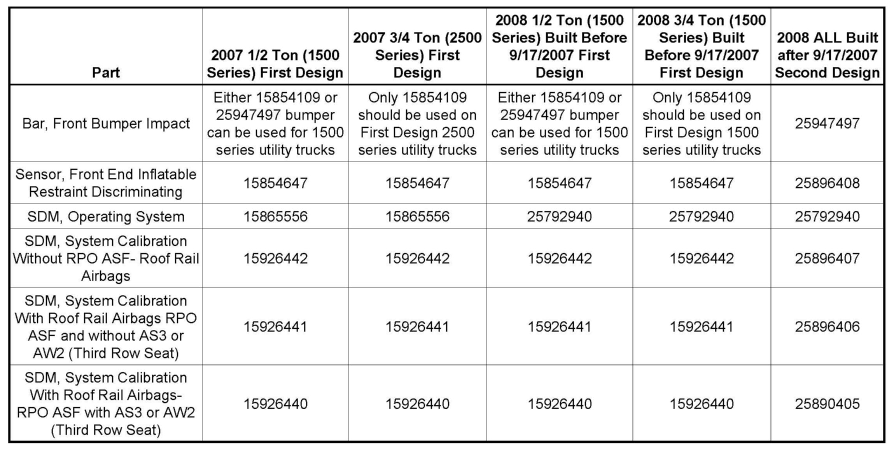

SRS - DTC's B0083/B0084 After Impact Sensor Replacement
INFORMATIONBulletin No.: 08-09-41-008A
Date: February 02, 2009
Subject:
Bumper Bar and Inflatable Restraint Front End Sensor Design Change and DTC B0083 or B0084 Set After Inflatable Restraint Front End Sensor (EFS) Has Been Replaced
Models:
2007-2008 Cadillac Escalade, Escalade ESV, Escalade EXT
2007-2008 Chevrolet Avalanche, Suburban, Tahoe
2007-2008 GMC Yukon, Yukon XL, Yukon Denali
Supercede:
This bulletin is being revised to correct the breakpoint date and change an impact bar part number. Please discard Corporate Bulletin Number 08-09-41-008 (Section 09 - Restraints).
This bulletin is being issued to inform dealers about the availability of two different types of Inflatable Restraint Front End Sensors (EFS), Front Bumper Impact Bars, SDM Operating System and SDM Calibrations on vehicles listed above.
A running change was made to the front bumper bar, Inflatable Restraint Front End sensor, SDM operating system and SDM System calibration on 9/17/2007. Vehicles built before 9/17/2007 are the first design and vehicles built after 9/17/2007 are the second design. The front bumper bar for the second design does not have a knee bracket.
If the first and second design Inflatable Restraint Front End Sensors, SDM Operating System or SDM System calibrations are mixed, DTC B0083 or B0084 may set. Normal diagnostics will not identify the parts/software incompatibility.
Important:
The two designs are not compatible with each other (parts or calibration). It is important to verify when the vehicle was built and install the correct parts and software in the vehicle. The parts catalog reflects the part changes and SPS Programming reflects the calibration changes.
Please note the following:
FOR SENSOR REPLACEMENT ONLY
^ Any time a vehicle (2007 or 2008) comes in for ONLY a problem that requires the replacement of an Inflatable Restraint Front End Sensor (EFS), the sensor should be replaced with the same design.

^ Refer to the table above for correct P/N to update the SDM Operating System and SDM System Calibration using SPS.
FOR BUMPER REPLACEMENT
^ When bumper bar replacement is required on any 2007 and 2008 vehicle, refer to the table for the correct P/N.
^ For vehicles built after 9/17/2007, replace the Inflatable Restraint Front End Sensor (EFS) with P/N 25896408 (2nd design).
^ Verify the SDM calibration P/N, which is dependent upon the RPO option and build date (see table).
If the vehicle comes in with the air bag deployed, all appropriate service protocols/bulletins need to be followed, including the ones above.
The table shows what part numbers and calibration are compatible with each other.

Disclaimer